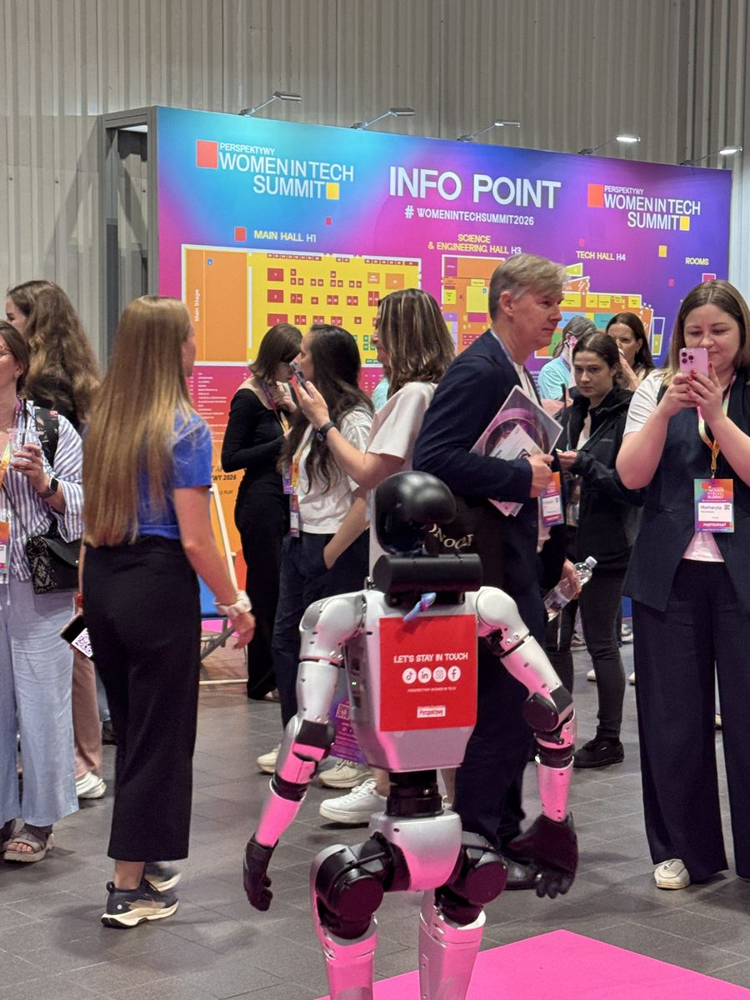
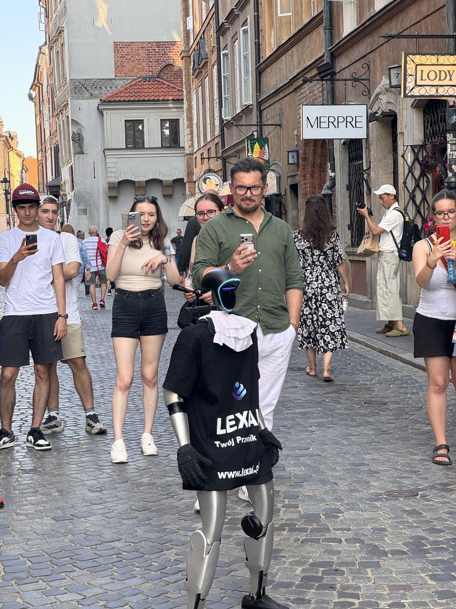
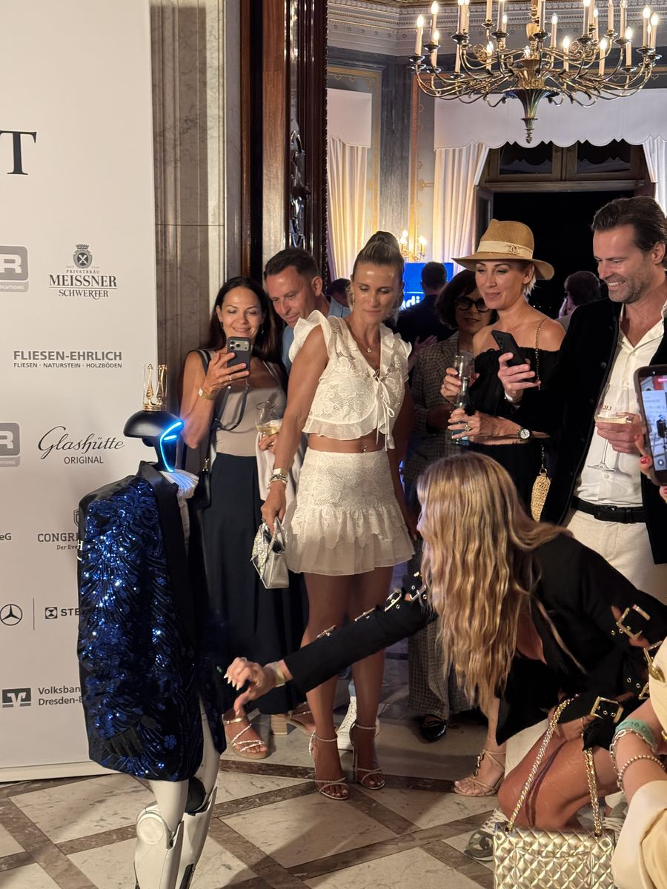

- Strona główna
- Blog
- Atrakcje eventowe — porównanie
Poradnik · Atrakcje
Atrakcje eventowe: co naprawdę zatrzymuje gości w 2026 roku
Fotobudkę każdy już widział, iluzjonistę pewnie też. Robota humanoidalnego, który odpowiada na pytania, większość gości nie spotkała nigdy. Porównujemy dziesięć popularnych atrakcji i piszemy uczciwie, kiedy robot wygrywa, a kiedy lepiej wybrać coś innego.

Organizator eventu ma dziś do wyboru więcej atrakcji niż kiedykolwiek. Problem w tym, że goście też je znają. Fotobudka i gogle VR też kiedyś były nowością. Atrakcja, którą ktoś widział już na trzech poprzednich imprezach, przestaje być powodem, żeby podejść.
Poniżej porównujemy dziesięć popularnych opcji. Nie podajemy cen cudzych usług — te zależą od wykonawcy i skali. Piszemy o tym, co widać na sali: czy atrakcja zatrzymuje ludzi, czy z nimi rozmawia, czy niesie Twoją markę i co zostaje po wydarzeniu.
Po czym oceniać atrakcję na event
Zanim porównasz konkretne opcje, ustal, czego od atrakcji oczekujesz. Najczęściej chodzi o jedną z tych rzeczy:
- Zatrzymanie. Czy ludzie podchodzą sami, bez zachęcania? Na targach i konferencjach to warunek, żeby cokolwiek dalej się wydarzyło.
- Rozmowa. Czy atrakcja wchodzi w interakcję z gościem, czy gość tylko patrzy? Interakcja daje pretekst do rozmowy o Twojej firmie.
- Marka. Czy logo i przekaz są częścią atrakcji, czy wiszą obok niej?
- Materiał po evencie. Czy goście robią zdjęcia i nagrania, które potem publikują?
- Nowość. Czy goście już to widzieli? To kryterium najczęściej pomijane, a decyduje o pierwszych sekundach.
- Logistyka. Ile miejsca i obsługi potrzeba, czy atrakcja zmieści się w programie i w sali.
Dziesięć atrakcji w jednej tabeli
To uproszczenie — dobry iluzjonista potrafi więcej niż przeciętny, a źle ustawiony robot mniej niż dobra fotobudka. Ale jako punkt wyjścia do rozmowy z zespołem tabela się sprawdza.
| Atrakcja | Mocna strona | Słabsza strona | Najlepiej na |
|---|---|---|---|
| Fotobudka, lustro selfie | Wydruk dla gościa, łatwy branding ramki | Goście znają ją z wielu imprez | Wesela, imprezy firmowe |
| Iluzjonista close-up | Bliski kontakt, emocje przy stole | Mała grupa naraz, marka w tle | Bankiety, kolacje |
| Karykaturzysta | Pamiątka dla każdego | Kolejka, kilka minut na osobę | Imprezy firmowe, pikniki |
| Kasyno | Zajmuje gości na cały wieczór | Wymaga stołów i krupierów | Wieczory firmowe |
| VR i symulatory | Silne wrażenie dla jednej osoby | Jedna osoba naraz, reszta czeka | Targi, pikniki |
| DJ lub zespół | Atmosfera i parkiet | Nie rozmawia z gośćmi o marce | Wesela, gale, imprezy |
| Stand-up, kabaret | Wspólny śmiech całej sali | Ryzyko, że żart nie trafi w publiczność | Gale, jubileusze |
| Pokaz barmański, food truck | Zawsze potrzebny, zbiera ludzi | Trudno z niego zrobić przekaz | Pikniki, plener |
| Animatorzy, szczudlarze | Ruch i kolor, dobre dla dzieci | Słabo niosą markę | Festyny, dni miasta |
| Robot humanoidalny | Nowość, rozmowa, marka na klatce piersiowej, nagrania gości | Nie zastąpi muzyki na cały wieczór | Targi, konferencje, gale, otwarcia, plener |
Dlaczego nowość ma tak duże znaczenie
Większość ludzi nigdy nie widziała robota humanoidalnego na żywo, a tym bardziej z nim nie rozmawiała. Tę różnicę widać od pierwszej minuty: goście podchodzą sami, zadają pytania, sprawdzają, czy robot naprawdę odpowiada, i prawie zawsze wyciągają telefon.
Na Women in Tech Summit w EXPO XXI — wydarzeniu dla około 14 000 osób, które na co dzień pracują z technologią — strefa z robotem należała do najczęściej fotografowanych miejsc. Na konferencji WallStreet 30 w Karpaczu uczestnicy sami nagrywali robota, a nagrania rozeszły się po social mediach. Przy fontannie Neptuna w Gdańsku robot w koszulce LEX AI zatrzymywał przechodniów, a materiał o nim pokazał Teleexpress.


Nowość ma też drugą stronę: działa najmocniej, dopóki jest nowością. Za kilka lat roboty humanoidalne będą powszechniejsze. Dziś dla większości gości to pierwsze takie spotkanie i właśnie dlatego zapamiętują je razem z Twoją marką.
Gdzie robot wygrywa z innymi atrakcjami
Targi i stoiska
Na targach liczy się to, czy ktoś zatrzyma się przy Twoim stoisku, a nie przy sąsiednim. Na salonie MSPO w Kielcach robot Grupy Rekord przedstawiał po kolei spółki grupy i zapraszał przechodzących korytarzem na pokaz medycyny pola walki. Na targach obronnych nikt nie przychodzi po atrakcje — robot był sposobem na zatrzymanie właściwej osoby na tyle długo, żeby handlowiec zdążył zacząć rozmowę.
Konferencje
Między prelekcjami goście szukają czegoś, co warto zobaczyć. Robot w lobby wita uczestników, odpowiada na pytania o agendę i daje temat do rozmowy przy kawie. Może też zapowiedzieć prelegenta albo otworzyć blok na scenie.
Gale i jubileusze
Na gali robot staje się częścią programu: wita gości na czerwonym dywanie, wręcza nagrodę, odlicza do północy. Na Drezdeńskiej Nocy Zamków pracował w cekinowym smokingu i koronie — na czerwonym dywanie, w sali balowej i wśród gości.
Otwarcia, salony i showroomy
Przed salonem Gonia Auto robot pracował w firmowej czerwieni — także w deszczu, pod parasolem. Otwarcie potrzebuje jednego mocnego powodu, żeby przyjść akurat dziś, i robot nim jest.
Plener i wydarzenia dla rodzin
Na Paradzie Jednorożców w gminie Jednorożec robot szedł w koszulce gminy wśród uczestników, w Ogrodzie Dendrologicznym w Przelewicach pracował po zmroku w świetle reflektorów. Więcej o tym w artykule o robocie na festyn i dni gminy.
Kiedy lepiej wybrać coś innego
Robot nie jest odpowiedzią na każde pytanie i nie ma sensu udawać, że jest.
- Potrzebujesz muzyki na cały wieczór. Robot może zatańczyć i rozkręcić parkiet na weselu, ale nie zastąpi DJ-a ani zespołu.
- Chcesz, żeby każdy gość wyszedł z fizyczną pamiątką. Wydruk z fotobudki albo karykatura dadzą to od ręki. Robot daje zdjęcia i nagrania w telefonach gości.
- Atrakcja ma zająć gości na kilka godzin bez przerwy. Kasyno czy warsztaty trzymają uwagę dłużej. Robot działa najlepiej w konkretnych momentach programu i w miejscach, gdzie ludzie się przemieszczają.
Robot w duecie z innymi atrakcjami
Najlepsze efekty dają połączenia, w których robot dokłada coś, czego reszta programu nie ma:
- Robot i prowadzący. Na finale Eco Studio robot pracował na scenie z prowadzącymi i finalistami. Prowadzący może rozmawiać z robotem przy mikrofonie, a cała sala słyszy odpowiedzi.
- Robot i ścianka. Robot przy ściance sponsorów to kadry z logo w tle i na klatce piersiowej robota. Na tym samym finale przy ściance nagrano z nim wywiad.
- Robot i DJ. Krótki układ choreograficzny otwiera parkiet, potem muzyka robi resztę.
- Robot i pokaz na stoisku. Robot zaprasza, handlowiec prowadzi pokaz — jak na MSPO.
Ile kosztuje robot w porównaniu z resztą programu
Pełny dzień z robotem kosztuje od 5 500 zł netto. Ostateczna kwota zależy od lokalizacji i długości trwania. Na krótsze wejście — otwarcie, blok na scenie, godziny szczytu na stoisku — przygotowujemy wycenę indywidualną, zawsze niższą niż za pełny dzień. Przy targach dwudniowych i dłuższych każdy dzień jest tańszy o 15%.
W cenie są operator, transport, branding (logo i kod QR) oraz ubezpieczenie OC. Wyceniamy występ, a nie samo wypożyczenie sprzętu: przed eventem ustalamy charakter robota, scenariusz i wiedzę o Twoim wydarzeniu. Rezerwacja nie wymaga zaliczki, fakturę wystawiamy po wydarzeniu.
W skrócie
Jeśli Twoja atrakcja ma zatrzymać gości, dać im temat do rozmowy i zostawić po evencie nagrania z Twoją marką, robot humanoidalny robi te trzy rzeczy naraz — i dla większości gości jest czymś, czego jeszcze nie widzieli.
Najczęstsze pytania
Tak. Robot potrzebuje kilku metrów kwadratowych i pracuje tak samo przy kilkudziesięciu, jak przy kilku tysiącach gości. Przy mniejszym wydarzeniu częściej wybiera się format „Wejście” — kilka godzin w programie zamiast pełnego dnia, wyceniane indywidualnie i zawsze taniej niż pełny dzień.
Tak, i często to najlepsze ustawienie. Robot przy ściance, obok fotobudki albo z prowadzącym na scenie dokłada moment, którego reszta programu nie ma, i nie odbiera nikomu miejsca.
Rozmawia. Mówi po polsku i w każdym innym języku, wita gości, odpowiada na pytania i zapowiada punkty programu. Przed wydarzeniem wgrywamy mu wiedzę o Twojej firmie i agendzie.
Pełny dzień od 5 500 zł netto. Kwota zależy od lokalizacji i długości trwania. W cenie są operator, transport, branding (logo, kod QR) i ubezpieczenie OC, a płacisz po wydarzeniu, bez zaliczki.